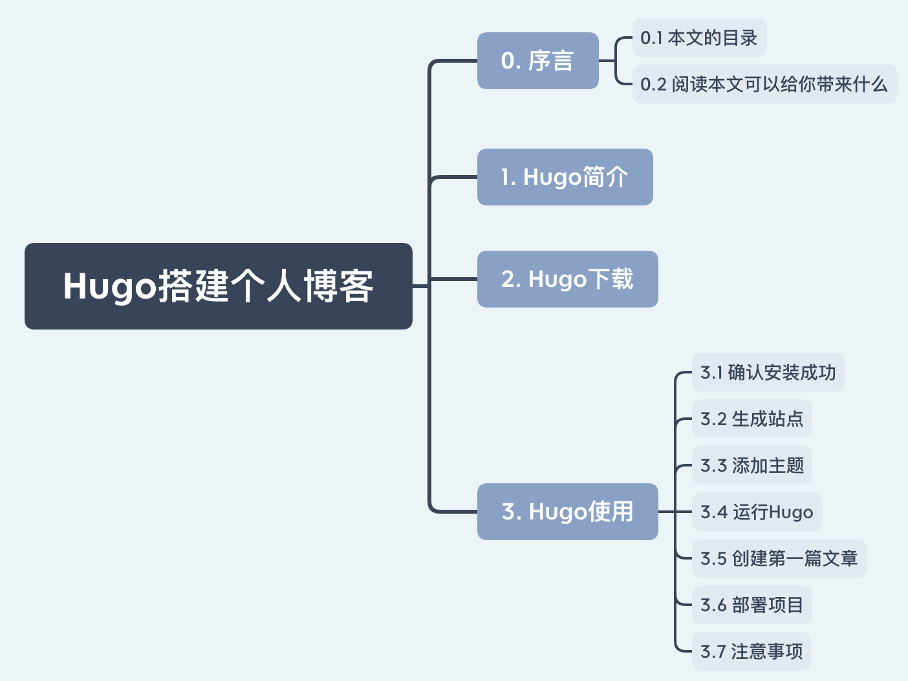
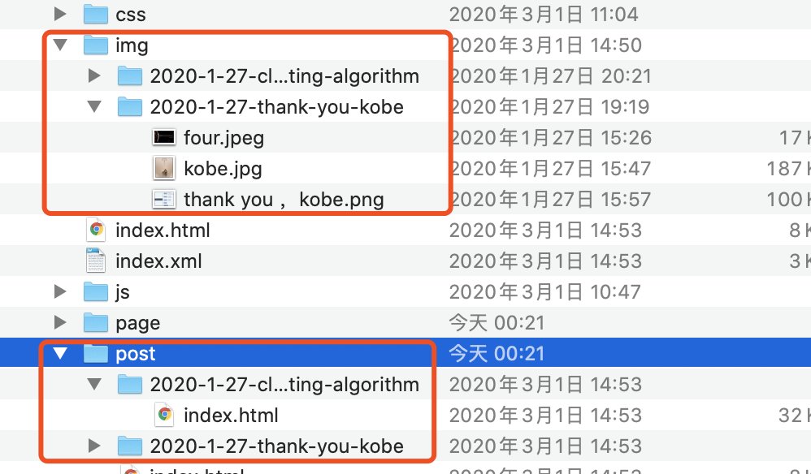

Hugo搭建个人博客
0. 序言
0.1 本文的目录

0.2 阅读本文可以给你带来什么
使用Hugo来搭建个人的博客。
1. Hugo简介
Hugo是由Go语言实现的静态网站生成器。
官网介绍：Hugo is one of the most popular open-source static site generators. With its amazing speed and flexibility, Hugo makes building websites fun again.
2. Hugo下载
可以下载二进制包，地址：https://github.com/gohugoio/hugo/releases
也可以查看官网安装说明：https://gohugo.io/getting-started/installing/
3. Hugo使用
3.1 确认安装成功
# 执行 hugo version 查看版本
hugo version
Hugo Static Site Generator v0.55.6/extended darwin/amd64 BuildDate: unknown
3.2 生成站点
一个站点的创建命令如下：
hugo new site project-name
例如我需要创建个人的博客名为：myblog
hugo new site myblog
创建完会后，在myblog文件夹会生成以下文件结构：
.
├── archetypes # 存放生成博客的模版
├── config.toml # 存放 hugo 配置文件 支持 JSON YAML TOML 三种格式配置文件
├── content # 存放 markdown 文件
├── data # 存放 Hugo 处理的数据
├── layouts # 存放布局文件
├── static # 存放静态文件 图片 CSS JS文件
└── themes # 存放主题
3.3 添加主题
hugo有很多主题，可以见官网的主题市场：https://themes.gohugo.io/
个人推荐两个比较好的主题：
我的自己个人博客使用的是第一个。
cd <YOUR Bolg Root Dir>
git clone https://github.com/flysnow-org/maupassant-hugo themes/maupassant
3.4 运行Hugo
在创建的站点目录执行相关命令进行调试：
hugo server --theme=hyde --buildDrafts
浏览器打开：http://localhost:1313/
3.5 创建第一篇文章
hugo new post/my-first-post.md
刷新浏览器会有一篇My First Post的文章。
可以将主题中的config.toml以及content拷贝到站点相对应的目录中（config.toml把站点的同名文件覆盖，主题中content拷贝到站点的content目录下）
# 可以执行
hugo server -D
3.6 部署项目
# 执行hugo -t 主题
hugo -t maupassant
会看到站点文件夹下面多了一个public的目录，将public中的内容推到github个人库中例如我的：https://github.com/robotLJW/robotLJW.github.io
3.7 注意事项
一、图片需要使用相对位置

二、config.toml中的baseURL需要使用域名
- 原文作者：萝卜头LJW
- 原文链接：https://robotljw.github.io/post/2020-3-5-hugo-blog/
- 版权声明：本作品采用知识共享署名-非商业性使用-禁止演绎 4.0 国际许可协议进行许可，非商业转载请注明出处（作者，原文链接），商业转载请联系作者获得授权。